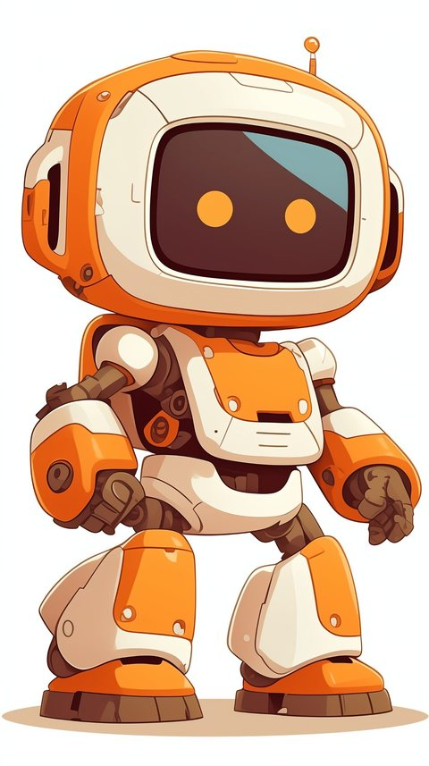

このマスコット、実は一度3Dモデル化に挑戦して没になっている。画像から自動で3Dにしてくれるサービスを試した話は日記に書いた通り、形にはなったものの持ち帰るには課金が必要で見送った。
今回はAIにthree.js(ブラウザの中で3Dの絵を描くためのプログラムの部品)のコードだけを書かせて3Dを作ってみた。最初は頭・胴体・腕・脚を分業させて細かく作り込んだけど、シンプルにデフォルメした版の方が無理がなくてしっくりきたので、こちらを採用した。
その後、別のAI(Gemini)に動きも付けてもらった。歩く・走る・ジャンプ・ダンス・挨拶・落ち込む・倒れる、と一通りの動きができるようになり、十字キー(またはW/A/S/Dキー)で自由に歩かせて回せる。
下の枠の中でドラッグすると、視点をぐるぐる回せる。
▲パッドまたは矢印キーで動きます
動かない場合は少し待つか、リロードしてみてください。細かく作り込んだ版はこちら →

元の絵はこちら。